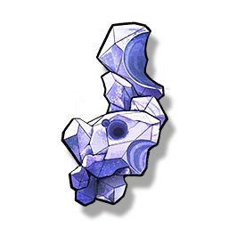

Resonators
Monsters
Weapons
Items
Fragipurple
Resources

Material for Crafting.
A widely distributed mineral, the unique deep purple color of which is highly recognizable. Because of its fragile texture, this mineral has very high requirements for processing equipment.